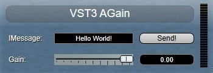
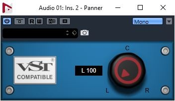
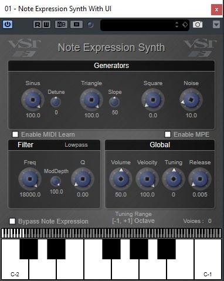
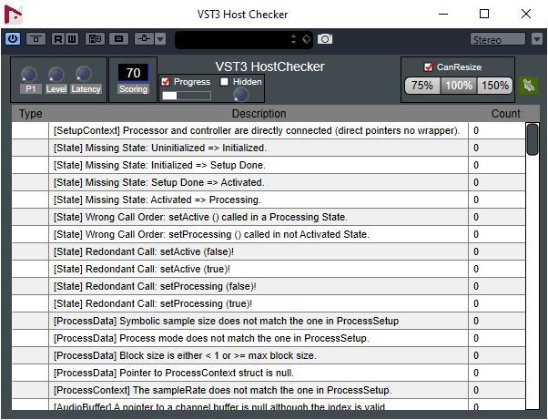
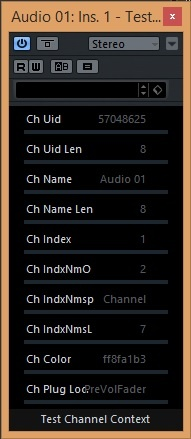
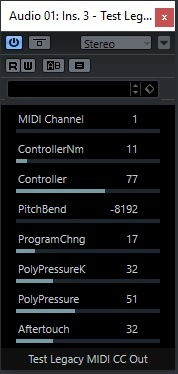
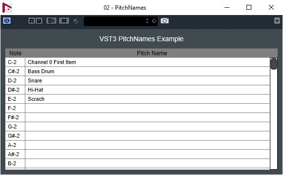
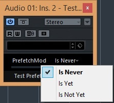
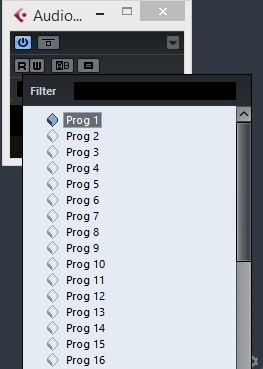

/ VST Home / What is the VST SDK?
VST 3 Plug-in Examples
On this page:
- Introduction
- ADelay
- AGain
- AGain Sample Accurate
- Test Channel Context
- Data Exchange
- VST3 Host Checker
- Test Legacy MIDI CC Out
- mda plug-ins
- Note Expression Synth
- Note Expression Text
- Panner
- PitchNames
- Test Prefetchable Support
- Test Program Change
- Test Multiple Program Changes
- Test Remap ParamID
- Sync Delay
- UTF16 Name
Related pages:
- VST 3 Plug-in Test Host
- AAX, AUv3 and AU Wrappers
- Building the examples included in the SDK on Windows
- Building the examples included in the SDK on macOS
- Building the examples included in the SDK on Linux
Introduction
The SDK includes some plug-ins implementation examples. The Legendary AGain and ADelay, thanks Paul Kellet the Open-source mda plug-ins, a basic Note Expression Synth supporting "Note Expression Event", an example of PitchNames support plug-in, a VST 3 Host Checker which checks if a host is VST 3 compliant and more...




Check the folder "public.sdk/samples/vst" of the SDK!
ⓘ Note
They use cmake as project generator: Using cmake for building VST 3 plug-ins
In order to add your own plug-ins check: Generate a new plug-in with the Project Generator App
ADelay
Very simple delay plug-in:
- only one parameter (a delay)
Check the folder "public.sdk/samples/vst/adelay" of the SDK!
Classes:
- ADelayProcessor
- ADelayController
AGain
The SDK includes an AGain plug-in which is a very simple VST 3 plug-in. This plug-in:
- is multichannel compatible
- supports bypass processing
- has an automated gain parameter
- has an Event input bus (allowing to use noteOn velocity to control the gain factor)
- has a VU peak meter
- uses the VSTGUI4 library
- a version of this plug-in with side-chaining is available (showing a plug-in using the same controller and different - components)
- an AAX version is available
- a AUv3 version is available
Check the folder "public.sdk/samples/vst/again" of the SDK!
Classes:
- AGain
- AGainWithSideChain (used for side-chain version)
- AGainController
AGain Sample Accurate
Simple plug-in showing how to achieve sample-accurate processing.
Based Check the folder "public.sdk/samples/vst/again_sampleaccurate" of the SDK!
Test Channel Context
Very simple plug-in:
- showing how to use the Vst::ChannelContext::IInfoListener interface
- using a generic UI

Check the folder "public.sdk/samples/vst/channelcontext" of the SDK!
Data Exchange
This plug-in:
- shows how to exchange data (waveform) between processor (in the realtime thread) and controller using the VST Data Exchange API: Vst:: IDataExchangeHandler
- shows how easy it is to use VSTGUI

Check the folder "public.sdk/samples/vst/dataexchange" of the SDK!
VST3 Host Checker
- Instrument, Panner and Fx plug-in checking the VST 3 support of a host
- It uses VSTGUI
- an AAX version is available
Check the folder "public.sdk/samples/vst/hostchecker" of the SDK!
Test Legacy MIDI CC Out
Very simple plug-in:
- showing how to use LegacyMIDICCOutEvent which allow to generate MIDI CC as output event
- VST parameters change which creates LegacyMIDICCOutEvent Event

Check the folder "public.sdk/samples/vst/legacymidiccout" of the SDK!
Classes:
- LegacyMIDICCOut::Plug
mda plug-ins
- Effects (stereo to stereo plug-ins):
- Ambience: Reverb.
- Bandisto: Multi-band Distortion.
- BeatBox: Drum Replacer.
- Combo: Amp and Speaker Simulator.
- DeEsser: High frequency Dynamics Processor.
- Degrade: Sample quality reduction.
- Delay: Simple stereo delay with feedback tone control.
- Detune: Simple up/down pitch shifting thickener.
- Dither: Range of dither types including noise shaping.
- DubDelay: Delay with feedback saturation and time/pitch modulation.
- Dynamics: Compressor / Limiter / Gate.
- Image: Stereo image adjustment and M-S matrix.
- Leslie: Rotary speaker simulator.
- Limiter: Opto-electronic style limiter.
- Loudness: Equal loudness contours for bass EQ and mix correction.
- MultiBand: Multi-band compressor with M-S processing modes.
- Overdrive: Soft distortion.
- RePsycho!: Drum loop pitch changer.
- RezFilter: Resonant filter with LFO and envelope follower.
- RingMod: Simple Ring Modulator.
- Round Panner: 3D panner.
- Shepard: Continuously rising/falling tone generator.
- SpecMeter: Stereo 13 Bands spectral Meter.
- Splitter: Frequency / level crossover for setting up dynamic processing.
- Stereo Simulator: Haas delay and comb filtering.
- Sub-Bass Synthesizer: Several low frequency enhancement methods.
- TalkBox: High resolution vocoder.
- TestTone: Signal generator with pink and white noise, impulses and sweeps.
- Thru-Zero Flanger: Classic tape-flanging simulation.
- Tracker: Pitch tracking oscillator, or pitch tracking EQ
- Instruments (1 Event input, 1 stereo Audio output):
- DX10: Sounds similar to the later Yamaha DX synths including the heavy bass but with a warmer, cleaner tone.
- EPiano: Simple EPiano.
- JX10: The plug-in is designed for high quality (lower aliasing than most soft synths) and low processor usage.
- Piano: Not designed to be the best sounding piano in the world, but boasts extremely low CPU and memory usage.
Based on the OpenSource mda plug-ins (http://mda.smartelectronix.com/), this set of plug-ins demonstrates how wrap DS- code in a VST 3 plug-in.
Check the folder "public.sdk/samples/vst/mda-vst3" of the SDK!
Classes:
- BaseProcessor
- BaseController
- BaseParameter
Note Expression Synth
-
Instrument plug-in supporting:
-
It shows how easy it is to use VSTGUI
-
A AUv3 version is available
Check the folder "public.sdk/samples/vst/note_expression_synth" of the SDK!
Classes:
- NoteExpressionSynth::Processor
- NoteExpressionSynth::Controller
- NoteExpressionSynth::Voice
Note Expression Text
- Plug-in visualizing the NoteExpression as Text
- It shows how easy it is to use VSTGUI4
Check the folder "public.sdk/samples/vst/note_expression_text" of the SDK!
Panner
- Simple Panner plug-in showing how to support Panner category (mono to Stereo)
- It shows how easy it is to use VSTGUI
Check the folder "public.sdk/samples/vst/panner" of the SDK!
Classes:
- PlugController
- PlugProcessor
PitchNames
- Instrument plug-in showing PitchNames support
- It shows how easy it is to use VSTGUI

Check the folder "public.sdk/samples/vst/pitchnames" of the SDK!
Classes:
- PitchNamesController
- PitchNamesProcessor
- PitchNamesDataBrowserSource
Test Prefetchable Support
Very simple plug-in:
- showing how to use the Vst:: IPrefetchableSupport interface
- using a generic UI

Check the folder "public.sdk/samples/vst/prefetchablesupport" of the SDK!
Test Program Change
Very simple plug-in:
- showing how to support Program List
- using a generic UI

Test Multiple Program Changes
Very simple plug-in:
- showing how to support multiple ProgramChange parameters: 16 slots with one associated program change parameter and a program list for each slot.
- using a generic UI
Test Remap ParamID
Very simple plug-in:
- demonstrating how a VST 3 plug-in could replace another one and remap parameters ID.
- it could replace the AGain plug-in when it is not available.
- it illustrates the use of the interface Vst:: IRemapParamID (for mapping Test Remap ParamID parameters to AGain plug-in parameters) and the module info with its compatibility field.
Sync Delay
Very simple delay plug-in:
- showing how to support Vst:: IProcessContextRequirements
Check the folder "public.sdk/samples/vst/syncdelay" of the SDK!
UTF16 Name
Very simple plug-in:
- with UTF16 characters in plug-in and company name
Check the folder "public.sdk/samples/vst/utf16name" of the SDK!